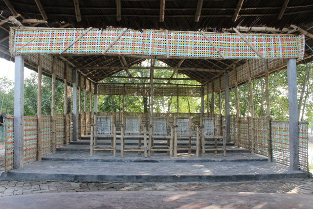

উপজেলার রমজাননগর ইউনিয়নের সুন্দরবনের কোল ঘেষে অবস্থান কালিঞ্চি গ্রামের। ধজিখালী নদীর পাড়ে গড়ে ওঠা এ গ্রামে রয়েছে মুন্ডা ক্ষুদ্র-নৃগোষ্ঠি সম্প্রদায়ের বসবাস। এ সম্প্রদায়ের মানুষ সুন্দরবনকে পবিত্র স্থান বলে মনে করে।
এ গ্রামে ইউরোপিয় ইউনিয়নের সহযোগিতায় রিলিফ ইন্টারন্যাশনাল নামে একটি সংস্থা মুন্ডা ক্ষুদ্র নৃগোষ্ঠি সম্প্রদায়কে কেন্দ্র করে তৈরি করেছে কারাম মুরা ম্যানগ্রোভ ভিলেজ নামে এই সাংস্কৃতিক ইকো পর্যটন কেন্দ্রটি।
মুন্ডা সস্প্রদায়ে প্রতোক্ষ ব্যবস্থাপনায় এখানে দেশি - বিদেশি পর্যটকদের জন্য রয়েছে আদিবাসী বাড়িতে থেকে সুন্দরবন ভ্রমনের সুযোগ। আবাসিক ব্যবস্থা থেকে শুরু করে আদিবাসী গান-বাজনা, নৌকা ভ্রমণ, খাওয়া-দাওয়া সবই রয়েছে এই ম্যানগ্রোভ ভিলেজে।
শ্যামনগর উপজেলা সদর হতে বংশীপুর বাজার হয়ে ভেটখালী পর্যন্ত ১৫ কিলোমিটার রাস্তা বাস, ইজবাইক, মাহিন্দ্র ও মটরসাইকেল যোগে যেতে হবে।
ভেটখালী বাজার থেকে মটরসাইকেল যোগে ৬ কিলোমিটার যেতে সময় লাগতে পারে ২০ মিনিট অথবা নদীপথে টুরিষ্ট ট্রলার করে যেতে সময় লাগতে পারে ১ ঘন্টা ১০ মিনিট।